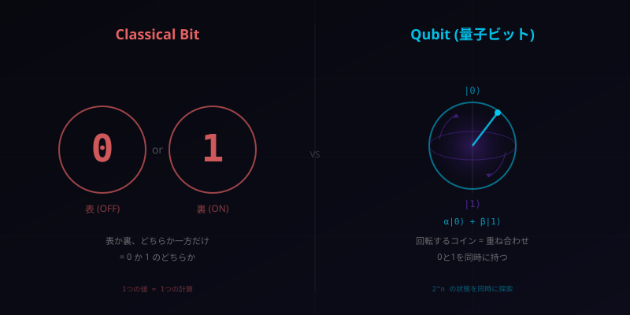
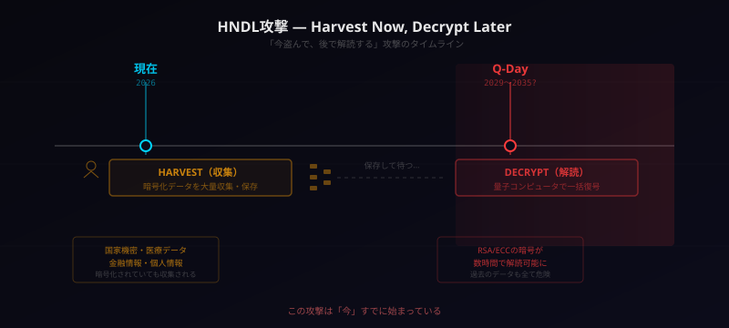
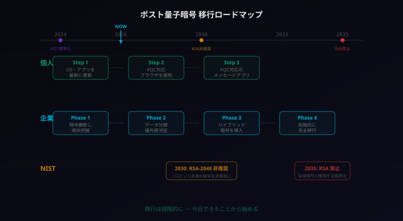

ポスト量子暗号入門 ― 「量子コンピュータ」が暗号を壊す日に備える

2026年は「量子セキュリティ元年」と言われています。量子コンピュータが暗号を壊す日は、もはやSFの話ではありません。今日からの備えを一緒に確認していきましょう。
そもそも「量子コンピュータ」って何？
ニュースで「量子コンピュータ」という言葉を見かける機会が増えた。だが、実際に何がすごくて、何が問題なのか。まずは基本を押さえよう。
ビット vs キュービット ― コインで理解する
普段使っているパソコンやスマホは古典コンピュータと呼ばれる。情報の最小単位はビットで、値は0か1のどちらか一方だ。コインに例えれば、表（0）か裏（1）か、常にどちらかが確定している。
量子コンピュータの情報単位はキュービット（量子ビット）という。キュービットは0と1を同時に持つことができる。これを重ね合わせ（スーパーポジション）と呼ぶ。
比喩で言えば、回転しているコインだ。着地するまでは表でも裏でもない——両方の可能性を同時に持っている。量子コンピュータは、この「回転中のコイン」を何十個、何百個と同時に操ることで、膨大な計算を一度に処理する。

迷路の比喩 ― なぜ速いのか
古典コンピュータが迷路を解くとき、1本の道を進み、行き止まりなら戻ってやり直す。1つずつ順番に試すしかない。
量子コンピュータは、すべてのルートに同時に分身を送り込むようなものだ。正解のルートがあれば、全ルートを試した結果から一瞬で見つけ出せる。これが「量子並列性」と呼ばれる能力であり、特定の問題——たとえば暗号の解読——において圧倒的な速度を発揮する。
エンタングルメント ― 双子のサイコロ
もう1つの重要な概念がエンタングルメント（量子もつれ）だ。
2つのサイコロが「量子もつれ」の状態にあると想像してほしい。一方を東京で振り、もう一方をニューヨークで振る。結果は必ず一致する。距離は関係ない。まるで2つのサイコロが瞬時に「会話」しているかのようだ。
量子コンピュータはこのエンタングルメントを活用して、複数のキュービット間で情報を即座に連携させ、計算のパワーを指数関数的に増大させる。
量子コンピュータはどこまで来たか ― 2026年の現在地
量子コンピュータの進化は加速している。2026年時点の主要な動きを整理しよう。
| 組織 | 量子ビット数 | 特徴 |
|---|---|---|
| Google（Willow） | 105 | エラー訂正で画期的成果。スパコン1025年の計算を5分で |
| 富士通 / 理研 | 256 | 超伝導量子コンピュータ。2025年実現 |
| IBM（Heron） | 156 | 商用クラウドで量子サービスを提供 |
| Microsoft | — | トポロジカル量子ビットで新アプローチ |
注目すべきは、暗号を破るために必要な量子ビット数の推定値が劇的に下がっていることだ。かつては2,000万量子ビットが必要とされていたが、最新の研究では10万量子ビット程度で可能かもしれないという報告もある。
ただし、現時点で暗号を破れる量子コンピュータはまだ存在しない。論理キュービット（エラー訂正済みの安定したキュービット）の数がまだ足りない。
すごいけど、まだ足りない——これが2026年の正確な状況だ。しかし「まだ足りない」は「永遠に足りない」ではない。そして、備えるには時間がかかる。
セキュリティの鉄則は「脅威が現実になる前に備える」こと。量子コンピュータが暗号を破れるようになってから対策するのでは遅い。それがこの記事のメッセージです。
今の暗号はなぜ安全なのか ― 「掛け算は簡単、素因数分解は困難」
量子コンピュータの脅威を理解するには、まず現在の暗号がなぜ安全なのかを知る必要がある。
南京錠の比喩
現在のインターネットセキュリティは、RSAやECC（楕円曲線暗号）という暗号方式に支えられている。その安全性は、ある数学的な「一方通行」に基づいている。
南京錠を想像してほしい。閉めるのは誰でもできる（カチッと押すだけ）。しかし鍵なしで開けるのは極めて困難だ。
RSA暗号もこの原理だ。
- 掛け算は簡単: 61 × 53 = 3,233 ← すぐ計算できる
- 素因数分解は困難: 3,233 = ? × ? ← 元の数を見つけるのは大変
実際のRSA暗号では、600桁以上の巨大な数を使う。この数の素因数分解を古典コンピュータで行うと、宇宙の年齢を超える時間がかかる。だから安全だった。
ECCも同じ原理
ECC（楕円曲線暗号）は、楕円曲線上の点の計算において「順方向は簡単だが逆方向は困難」という性質を利用する。RSAよりも短い鍵で同等の安全性を実現でき、スマホやIoTデバイスで広く使われている。
しかしRSAもECCも、その安全性の根拠は「古典コンピュータでは解くのに時間がかかりすぎる」という前提に立っている。この前提が崩れたらどうなるか——それが次のセクションだ。

「南京錠は閉めるのは簡単、鍵なしで開けるのは大変」。暗号の仕組みはこのイメージだけで大丈夫。数学の詳細は気にしなくてOKです。
量子コンピュータが暗号を壊すメカニズム
1994年、数学者ピーター・ショアが発表したショアのアルゴリズムが、すべてを変えた。
ショアのアルゴリズム ― 素因数分解を高速化する
ショアのアルゴリズムは、量子コンピュータを使って素因数分解を劇的に高速化するアルゴリズムだ。古典コンピュータでは宇宙の寿命をかけても解けない問題を、十分な量子ビットがあれば数時間で解ける。
これが意味するのは明白だ——RSAは破られる。ECCも同様に、量子コンピュータに対して脆弱であることが証明されている。
つまり、現在のインターネットセキュリティの基盤が根底から崩れる可能性がある。
「今盗んで、後で解読」（HNDL攻撃）
ここで最も恐ろしいのは、HNDL攻撃（Harvest Now, Decrypt Later）が今、この瞬間にも起きているという事実だ。
攻撃者（特に国家レベルの組織）は、今の段階で大量の暗号化データを収集・保存している。現時点では解読できないが、将来、十分な性能の量子コンピュータが完成したとき、過去に収集したデータを一括で解読する計画だ。
国家機密、医療記録、金融データ、個人情報——暗号化されていても、HNDL攻撃者にとっては「いつか開く金庫」にすぎない。

Q-Day ― その日はいつ来るのか
量子コンピュータがRSAやECCを実際に破れるようになる日をQ-Dayと呼ぶ。専門家の予測は2029年〜2035年の間に集中している（詳細はセクション8で整理する）。
重要なのは、正確な日付ではない。「来るかもしれない」ではなく「いつ来るか」の問題になっていることだ。そして、HNDL攻撃を考えれば、備えは「Q-Dayの前」ではなく「今日」から必要だ。
HNDL攻撃が意味するのは、「Q-Dayが来てから対策すればいい」は完全に間違いということです。今日送信したデータが、10年後に丸裸になる可能性がある。
ポスト量子暗号とは何か ― 量子でも破れない新しい数学
では、量子コンピュータにも破れない暗号は存在するのか。答えは「ある」。それがポスト量子暗号（PQC: Post-Quantum Cryptography）だ。
NIST標準化 ― 2024年8月の歴史的決定
米国国立標準技術研究所（NIST）は、8年間の検討・選考を経て、2024年8月にポスト量子暗号の最初の標準を正式に発表した。これは暗号の歴史における画期的な転換点だ。
| アルゴリズム | 用途 | 基盤技術 | 特徴 |
|---|---|---|---|
| ML-KEM（旧CRYSTALS-Kyber） | 鍵交換 | 格子暗号 | 高速、鍵サイズ小。最も広く採用 |
| ML-DSA（旧CRYSTALS-Dilithium） | デジタル署名 | 格子暗号 | 汎用的な署名方式。標準推奨 |
| SLH-DSA（旧SPHINCS+） | デジタル署名 | ハッシュベース | 格子暗号と異なる数学的基盤。バックアップ用 |
| HQC | 鍵交換 | 符号暗号 | ML-KEMのバックアップ。2025年に追加標準化 |
格子暗号の比喩 ― 1000次元の地図
ML-KEMやML-DSAの基盤となっている格子暗号とは何か。直感的に理解してみよう。
2次元の地図を想像してほしい。格子状の交差点が並んでいる。「この地点から最も近い交差点はどこか？」という問題は、見ればすぐにわかる。
では、1,000次元の地図ではどうか。人間にはもう想像すらできない。古典コンピュータでも、量子コンピュータでも、この問題を効率的に解く方法は見つかっていない。
この「高次元格子上の最近ベクトル問題」の困難さが、格子暗号の安全性の根拠だ。RSAの安全性が「素因数分解の困難さ」に依存していたのに対し、格子暗号は量子コンピュータでも解けない別の困難さに依存している。
要するに、「量子コンピュータでも得意じゃない種類の数学問題」を使っているのがポスト量子暗号。量子コンピュータはすべてを高速化できるわけではないんです。
もう始まっている ― 大手企業の対応状況
ポスト量子暗号は「将来の話」ではない。あなたが毎日使っているサービスで、すでに導入が進んでいる。
Google Chrome ― ML-KEM標準搭載
Google Chromeは、2024年後半からML-KEMによるハイブリッド鍵交換をデフォルトで有効化した。つまり、Chromeでウェブサイトにアクセスするだけで、あなたの通信はすでにポスト量子暗号で保護されている可能性が高い。
Apple iMessage ― PQ3プロトコル
Appleは2024年にiMessageにPQ3プロトコルを導入した。Appleはこれを「レベル3セキュリティ」——既知のメッセージングプロトコルで最も高いセキュリティレベル——と位置づけている。iPhoneのメッセージは、量子コンピュータに対しても安全に設計されている。
Signal ― PQXDHプロトコル
プライバシー重視のメッセージアプリSignalも、PQXDHプロトコルでポスト量子暗号に対応済みだ。暗号化通信の代名詞であるSignalが真っ先に対応したのは象徴的だ。
Cloudflare ― 全トラフィックの65%が移行済み
CDN大手のCloudflareは、2025年末時点で配信する全トラフィックの約65%がポスト量子暗号に移行済みと報告している。2024年3月から段階的に導入を進め、驚異的なスピードで移行を完了させつつある。
AWS / Microsoft
AWSはTLS 1.3接続でML-KEMベースのハイブリッド鍵交換をサポート開始。Microsoftも自社サービスのポスト量子暗号対応ロードマップを公開している。
つまり、あなたのスマホも、あなたのブラウザも、もうポスト量子暗号に対応している可能性が高い。移行は静かに、しかし確実に進んでいる。
「ポスト量子暗号？まだ先の話でしょ」と思った方——GoogleもAppleもSignalも、すでに動いています。対応していないのは、あなたの組織かもしれません。
今日からできること ― 個人と企業の備え
では、具体的に何をすればいいのか。個人と企業、それぞれのアクションを整理する。
個人でできること
- OS・アプリを最新に更新する: iOS、Android、Windows、macOS——すべて最新バージョンにアップデートするだけで、ポスト量子暗号の恩恵を受けられる場合が多い
- PQC対応ブラウザを使う: Chrome、Edge、Firefoxは順次PQCに対応。最新版を使えばOK
- PQC対応のメッセージアプリを使う: Signal、iMessageはすでに対応済み。機密性の高い会話にはこれらを使おう
企業がやるべき4フェーズ
- 暗号棚卸し: 自社システムで使われている暗号方式を洗い出す。RSA、ECCがどこで使われているか把握する
- データ分類と優先度決定: 保護期間が長いデータ（医療記録、政府文書、知的財産）を特定し、移行の優先順位を決める
- ハイブリッド暗号の導入: 従来の暗号とポスト量子暗号を並行して使う「ハイブリッド方式」で段階的に移行する。万一PQCに問題が見つかっても、従来暗号がバックアップになる
- 段階的な完全移行: NISTのスケジュールに合わせて、2030年のRSA非推奨、2035年のRSA禁止を見据えた計画的移行

NISTの期限
NISTは明確なスケジュールを示している。
- 2030年: RSA-2048など112ビット未満のセキュリティ強度を持つ暗号を非推奨
- 2035年: 従来暗号の使用を全面禁止
これは米国政府機関向けのスケジュールだが、民間企業も事実上このスケジュールに追随することが求められる。特にグローバル展開する企業にとっては必須の対応だ。
個人としてやることは実はシンプル。「スマホとブラウザを最新版にする」——これだけで第一歩は完了です。難しいことは何もありません。
Q-Dayタイムライン ― いつ来るのか
Q-Dayの予測は専門家によって異なるが、共通しているのは「遠い未来ではない」という認識だ。
| 予測元 | Q-Day予測時期 | 備考 |
|---|---|---|
| Google（Hartmut Neven） | 2029年 | 量子AI研究所所長の予測 |
| NIST | 2030年までに備え完了を要求 | 標準化スケジュールから逆算 |
| BSI（ドイツ連邦情報セキュリティ庁） | 2030年代前半 | 欧州の公的見解 |
| 業界コンセンサス | 2028〜2035年 | 複数の調査の中央値 |
| Global Risk Institute | 2033年（50%確率） | 毎年更新される確率予測 |
正確な日付を予測することは不可能だ。しかし、以下の点は確実に言える。
- 量子コンピュータの進化は加速している（減速していない）
- HNDL攻撃を考慮すると、Q-Dayの何年も前から実質的な脅威がある
- 暗号の移行には数年〜十数年かかる（一朝一夕にはいかない）
不確実だが、備えるには十分な根拠がある——これが現時点での最も正確な答えだ。
「本当に来るかわからないなら対策しなくていいのでは？」——その考え方こそが最大のリスクです。セキュリティは「来てから考える」では間に合いません。
まとめ
要点を3つに絞る。
- 量子コンピュータは今の暗号を破る力を持つ。ショアのアルゴリズムにより、RSAもECCも脆弱になる。Q-Dayは2029〜2035年と予測されている
- ポスト量子暗号はすでに標準化・実装済み。NISTが2024年に標準を発表し、Google、Apple、Signal、Cloudflareなど大手企業は移行を完了しつつある
- HNDL攻撃は「今」起きている。Q-Dayを待つまでもなく、今日の暗号化データは将来解読されるリスクがある。備えは今日から
関連キーワードを整理しておく。
| キーワード | 概要 |
|---|---|
| ポスト量子暗号（PQC） | 量子コンピュータでも解読不可能な暗号方式の総称 |
| ML-KEM / ML-DSA | NIST標準化されたポスト量子暗号アルゴリズム（格子暗号ベース） |
| HNDL攻撃 | Harvest Now, Decrypt Later。今データを収集し、将来量子コンピュータで解読する攻撃 |
| Q-Day | 量子コンピュータが実用的にRSA/ECCを破れるようになる日 |
| ハイブリッド暗号 | 従来暗号とPQCを併用する移行期の方式 |
| 格子暗号 | 高次元格子上の数学的問題に基づく暗号方式。PQCの主流 |
脅威は未来にあるが、備えは今日から。量子コンピュータの進化を止めることはできません。できるのは、それに耐えうるセキュリティを今から構築することだけです。
難しく感じても大丈夫です。まずは自分のスマホのアップデートから。それだけで、あなたはもうポスト量子暗号の世界に一歩踏み出しています。
「回転するコイン」と「双子のサイコロ」。この2つのイメージを覚えておけば、量子コンピュータの本質はOKです。完璧に理解する必要はありません。